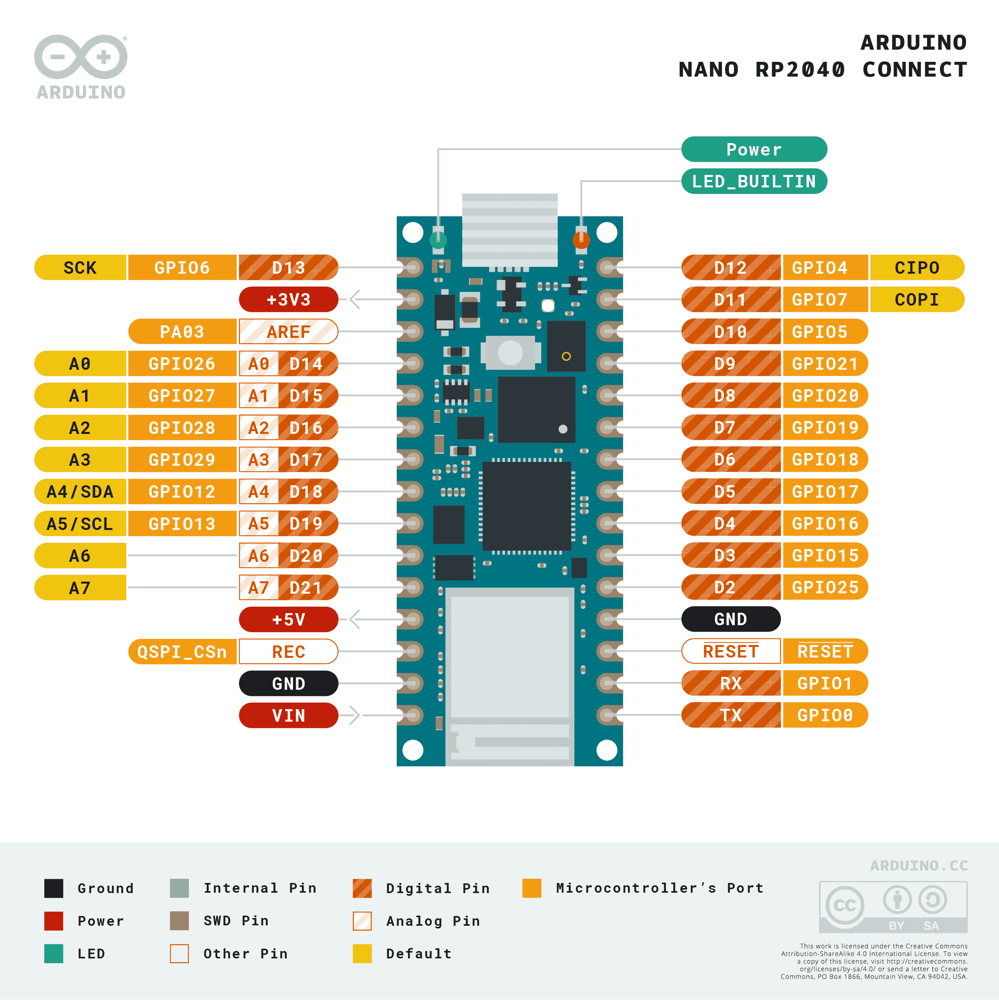

Arduino Nano RP2040 Connect¶
Avertissement
Cette carte n’est plus prise en charge. La dernière version du micrologiciel OpenMV pour l’Arduino Nano RP2040 Connect est la 4.7.0. Aucune mise à jour du micrologiciel, correction de bogue ou nouvelle fonctionnalité ne sera publiée pour cette cible. Les informations ci-dessous sont conservées pour les utilisateurs qui exécutent la version 4.7.0 ou antérieure.
L’Arduino Nano RP2040 Connect est une carte de 45 × 18 mm au format Arduino Nano, construite autour du Raspberry Pi RP2040 — un double ARM Cortex‑M0+ cadencé à 133 MHz avec 264 Ko de SRAM interne. Le WiFi et le BLE proviennent d’un module U‑blox NINA‑W102, et la carte embarque une centrale inertielle (IMU) 6 axes LSM6DSOX ainsi qu’un microphone PDM MP34DT06. Le micrologiciel OpenMV pilote l’ensemble de ces composants depuis MicroPython.

Pour la fiche technique complète, les photos et les dimensions, consultez la page produit de l’Arduino Nano RP2040 Connect.
Points forts¶
Raspberry Pi RP2040 double ARM Cortex‑M0+ à 133 MHz avec 264 Ko de SRAM interne.
Mémoire flash QSPI externe de 16 Mo.
Module U‑blox NINA‑W102 offrant le Wi‑Fi 2,4 GHz b/g/n et le Bluetooth 4.2 (BR/EDR + LE).
Centrale inertielle (IMU) 6 axes LSM6DSOX et microphone PDM MP34DT06.
Connecteur Micro USB pour l’alimentation, la programmation et un REPL CDC.
22 broches d’E/S utilisateur sur les connecteurs Nano standard —
TX/RX,D2–D13(numériques),A0–A7(analogiques).
Brochage¶
{kind=link}

Référence des broches¶
Nom de la broche |
Référence |
Fonction |
|---|---|---|
TX |
3,3 V |
UART0 TX / SPI0 RX / I2C0 SDA / PWM0 A |
RX |
3,3 V |
UART0 RX / SPI0 CS / I2C0 SCL / PWM0 B |
D2 |
3,3 V |
SPI1 CS / UART1 RX / I2C0 SCL / PWM4 B |
D3 |
3,3 V |
SPI1 TX / UART0 RTS / I2C1 SCL / PWM7 B |
D4 |
3,3 V |
SPI0 RX / UART0 TX / I2C0 SDA / PWM0 A |
D5 |
3,3 V |
SPI0 CS / UART0 RX / I2C0 SCL / PWM0 B |
D6 |
3,3 V |
SPI0 SCK / UART0 CTS / I2C1 SDA / PWM1 A |
D7 |
3,3 V |
SPI0 TX / UART0 RTS / I2C1 SCL / PWM1 B |
D8 |
3,3 V |
SPI0 RX / UART1 TX / I2C0 SDA / PWM2 A |
D9 |
3,3 V |
SPI0 CS / UART1 RX / I2C0 SCL / PWM2 B |
D10 |
3,3 V |
SPI0 CS / UART1 RX / I2C0 SCL / PWM2 B |
D11 |
3,3 V |
SPI0 TX / UART1 RTS / I2C1 SCL / PWM3 B |
D12 |
3,3 V |
SPI0 RX / UART1 TX / I2C0 SDA / PWM2 A |
D13 |
3,3 V |
SPI0 SCK / UART1 CTS / I2C1 SDA / PWM3 A |
D14 / A0 |
3,3 V |
ADC / SPI1 SCK / UART1 CTS / I2C1 SDA / PWM5 A |
D15 / A1 |
3,3 V |
ADC / SPI1 TX / UART1 RTS / I2C1 SCL / PWM5 B |
D16 / A2 |
3,3 V |
ADC / SPI1 RX / UART0 TX / I2C0 SDA / PWM6 A |
D17 / A3 |
3,3 V |
ADC / SPI1 CS / UART0 RX / I2C0 SCL / PWM6 B |
D18 / A4 / SDA |
3,3 V |
ADC / I2C0 SDA / SPI1 RX / UART0 TX / PWM6 A |
D19 / A5 / SCL |
3,3 V |
ADC / I2C0 SCL / SPI1 CS / UART0 RX / PWM6 B |
D20 / A6 |
3,3 V |
ADC / GPIO |
D21 / A7 |
3,3 V |
ADC / GPIO |
RESET |
3,3 V |
appuyez sur le bouton RESET embarqué ou reliez à la masse (GND) pour réinitialiser |
REC |
3,3 V |
BOOTSEL — maintenir à l’état haut à la mise sous tension pour entrer dans le programme d’amorçage ROM du RP2040 |
LED_BUILTIN |
— |
LED utilisateur orange sur |
LED_RED |
— |
Canal rouge de la LED RGB |
LED_GREEN |
— |
Canal vert de la LED RGB |
LED_BLUE |
— |
Canal bleu de la LED RGB |
Avertissement
Les broches d’E/S du Nano RP2040 Connect fonctionnent en 3,3 V uniquement — elles ne sont pas tolérantes au 5 V. Y injecter du 5 V endommagera le RP2040.
Broches d’alimentation¶
VIN — entrée 4 à 20 V. Alimente la carte via le régulateur à découpage embarqué. Également alimentée à travers une diode depuis le rail USB 5 V, de sorte que l’USB et
VINpeuvent être présents en même temps sans se rétro-alimenter l’un l’autre.+5V — non connectée par défaut.
+3V3 — sortie du régulateur 3,3 V.
AREF — broche de référence analogique. Non reliée au RP2040 sur cette carte — l’ADC est toujours référencé à 3,3 V.
GND — masse commune.
Le Nano RP2040 Connect peut être alimenté par l’une ou l’autre voie :
Micro USB — fournit 5 V au régulateur embarqué.
Broche VIN — appliquez une alimentation régulée de 4 à 20 V.
Note
Un cavalier à souder situé sous la carte relie +5V au rail USB 5 V. Fermez-le pour que la broche +5V du connecteur transporte effectivement du 5 V.
Note
Un cavalier à souder normalement fermé, placé sur la sortie du régulateur à découpage 4–20 V embarqué, peut être coupé pour désactiver le régulateur ; la carte peut alors être alimentée directement par une source externe 3,3 V sur +3V3.
Broches de récupération et de débogage¶
RESET — à la fois une pastille exposée et un bouton RESET momentané sur le dessus de la carte, reliés à la ligne NRST du RP2040. Reliez à la masse (GND) ou appuyez sur le bouton pour réinitialiser.
REC — pastille exposée. Maintenir
RECà l’état haut à la mise sous tension (ou en appuyant sur RESET) place le RP2040 dans son programme d’amorçage ROM ; la carte se ré-énumère comme un lecteur de stockage de masse USB nomméRPI-RP2et accepte une image de micrologiciel.uf2.
Le Nano RP2040 Connect utilise la réinitialisation par double appui standard d’Arduino pour entrer dans le programme d’amorçage d’Arduino. Appuyez rapidement deux fois sur le bouton RESET — la carte se ré-énumère via USB comme un périphérique UF2 et OpenMV IDE peut flasher une nouvelle image de micrologiciel.
Les signaux SWD du RP2040 sont exposés sur des pastilles métallisées à l’arrière de la carte, juste sous le module NINA. Tous les signaux de débogage sont référencés à 3,3 V.
Périphériques embarqués¶
LED¶
Le Nano RP2040 Connect possède une LED RGB utilisateur — pilotée via les canaux sérigraphiés LED_RED, LED_GREEN et LED_BLUE — ainsi qu’une LED orange distincte LED_BUILTIN sur D13. Les quatre sont contrôlables par logiciel via machine.LED:
from machine import LED
LED("LED_RED").on()
LED("LED_GREEN").on()
LED("LED_BLUE").on()
LED("LED_BUILTIN").on()
Une LED d’alimentation verte distincte s’allume dès que le rail +3,3 V est actif ; elle n’est pas contrôlable par l’utilisateur.
Capteur de la caméra¶
Le micrologiciel OpenMV sur le Nano RP2040 Connect prend en charge le capteur CMOS parallèle OmniVision OV7670. La carte n’a pas de capteur d’image embarqué — câblez un module OV7670 sur les broches du connecteur sérigraphié listées ci-dessous et pilotez-le via le module csi — capteurs de caméra:
import csi
cam = csi.CSI()
cam.reset()
cam.pixformat(csi.RGB565)
cam.framesize(csi.QVGA)
cam.snapshot(time=2000) # let auto‑exposure settle
while True:
img = cam.snapshot()
Note
L’OV7670 utilise 14 broches. Le micrologiciel les câble comme suit :
Signal du capteur |
Broche du Nano RP2040 |
|---|---|
D0 |
|
D1 |
|
D2 |
|
D3 |
|
D4 |
|
D5 |
|
D6 |
|
D7 |
|
HSYNC |
|
VSYNC |
|
PXCLK |
|
MXCLK |
|
POWER |
|
RESET |
|
SCL |
|
SDA |
|
Le bus de contrôle I²C de l’OV7670 est partagé avec l’IMU embarquée et l’ATECC608A sur I²C 0. Le capteur est à l’adresse 7 bits 0x21 — les périphériques utilisateur sur le bus 0 doivent également éviter cette adresse lorsque la caméra est câblée.
IMU¶
L’accéléromètre + gyroscope 6 axes LSM6DSOX embarqué se trouve sur I2C0. Le machine.I2C(0) du port rp2 utilise par défaut un autre jeu de broches ; passez donc explicitement les pastilles sérigraphiées SDA/SCL. Utilisez le pilote figé lsm6dsox.LSM6DSOX:
import time
from machine import I2C, Pin
from lsm6dsox import LSM6DSOX
bus = I2C(0, scl=Pin("SCL"), sda=Pin("SDA"))
imu = LSM6DSOX(bus)
while True:
print(imu.accel()) # (x, y, z) in g
print(imu.gyro()) # (x, y, z) in deg/s
time.sleep_ms(100)
Microphone¶
Le microphone PDM MP34DT06 embarqué est capturé via audio — Module Audio à l’aide de l’un des blocs PIO du RP2040:
import audio
from ulab import numpy as np
def loudness(pcmbuf):
samples = np.array(np.frombuffer(pcmbuf, dtype=np.int16), dtype=np.float)
rms = np.sqrt(np.mean(samples ** 2))
if rms > 10000:
print("Loud!", int(rms))
audio.init(channels=1, frequency=16000, gain_db=24)
audio.start_streaming(loudness)
while True:
pass
Wi‑Fi¶
Le module NINA‑W102 embarqué est exposé via network — configuration réseau comme une interface station:
import network, time
wlan = network.WLAN(network.STA_IF)
wlan.active(True)
wlan.connect("ssid", "password")
while not wlan.isconnected():
time.sleep(1)
print("Wi‑Fi IP:", wlan.ipconfig("addr4")[0])
Bluetooth¶
Le même module NINA expose également le Bluetooth 4.2 LE. Utilisez aioble — BLE asynchrone pour un BLE compatible asyncio — par exemple, s’annoncer comme périphérique et attendre qu’un central se connecte:
import asyncio
import aioble
async def run():
while True:
conn = await aioble.advertise(250_000, name="Nano-RP2040")
print("Connected:", conn.device)
await conn.disconnected()
asyncio.run(run())
Référence des bus¶
GPIO¶
Utilisez machine.Pin pour lire ou piloter n’importe quelle broche sérigraphiée. Les sorties sont en CMOS 3,3 V, avec un courant absorbé total de 50 mA réparti sur tous les GPIO.
from machine import Pin
out = Pin("D2", Pin.OUT)
out.on()
out.off()
out.value(1)
inp = Pin("D3", Pin.IN, Pin.PULL_UP)
print(inp.value())
Toute broche d’entrée peut aussi déclencher une interruption sur les transitions de front:
def handler(pin):
print("triggered:", pin)
Pin("D3", Pin.IN, Pin.PULL_UP).irq(
handler, Pin.IRQ_FALLING | Pin.IRQ_RISING,
)
UART¶
Bus |
TX |
RX |
|---|---|---|
UART0 |
TX |
RX |
Utilisez les noms sérigraphiés TX/RX avec machine.UART:
from machine import UART
uart = UART(0, baudrate=115200)
uart.write("hello")
uart.read(5)
Note
machine.UART(1) existe mais est réservé au module NINA‑W102 embarqué (la liaison BLE) ; ne l’utilisez pas directement.
I²C¶
Bus |
SDA |
SCL |
|---|---|---|
I2C0 |
|
|
I2C1 |
|
|
Les deux bus nécessitent que leurs broches soient passées explicitement à machine.I2C:
from machine import I2C, Pin
bus0 = I2C(0, scl=Pin("SCL"), sda=Pin("SDA"), freq=400_000)
bus0.scan()
bus1 = I2C(1, scl=Pin("A1"), sda=Pin("A0"), freq=400_000)
bus1.scan()
Note
Deux puces embarquées partagent le bus 0 — les périphériques utilisateur sur ce bus doivent éviter leurs adresses :
0x6A— IMU LSM6DSOX0x60— ATECC608A‑MAHDA‑T
Utiliser A0/A1 comme I²C les consomme pour le bus, de sorte qu’ils ne peuvent pas servir simultanément d’entrées ADC.
Note
Les pastilles SDA / SCL (bus 0) disposent de résistances de tirage (pull-up) embarquées vers 3,3 V, donc aucune résistance de tirage externe n’est nécessaire pour les périphériques sur ce bus. A0 / A1 (bus 1) n’en disposent pas — ajoutez des résistances de tirage externes lors de l’utilisation du bus 1.
Le même matériel peut aussi être utilisé en mode cible (esclave) via machine.I2CTarget pour exposer une zone mémoire à un autre contrôleur I²C:
from machine import I2CTarget
buf = bytearray(32)
target = I2CTarget(0, addr=0x42, mem=buf)
SPI¶
Bus |
MOSI |
MISO |
SCK |
CS |
|---|---|---|---|---|
SPI0 |
D11 |
D12 |
D13 |
D10 |
Le port rp2 ne préconfigure pas les broches de SPI0 sur cette carte ; passez donc explicitement les pastilles sérigraphiées lors de la création du bus:
from machine import SPI, Pin
spi = SPI(0, baudrate=10_000_000,
sck=Pin("D13"), mosi=Pin("D11"), miso=Pin("D12"))
cs = Pin("D10", Pin.OUT, value=1) # CS is not driven by the SPI peripheral
cs.value(0)
spi.write(b"hello")
cs.value(1)
Note
D13 fait aussi office de LED orange LED_BUILTIN — piloter le SPI sur ce bus fera clignoter la LED au rythme de l’horloge du bus.
Note
machine.SPI(1) existe mais est réservé au module NINA‑W102 embarqué (la liaison SPI Wi-Fi/BLE) ; ne l’utilisez pas directement.
ADC¶
Le RP2040 dispose de quatre canaux ADC 12 bits exposés sur A0–A3, tous référencés à 3,3 V — read_u16 renvoie 0–65535 sur la plage 0–3,3 V à la broche. La broche AREF de la carte n’est pas reliée, donc la référence est toujours de 3,3 V:
from machine import ADC
import time
adc = ADC("A0")
while True:
voltage = adc.read_u16() * 3.3 / 65535
print(voltage)
time.sleep_ms(100)
PWM¶
Broche |
Tranche / canal |
|---|---|
TX |
PWM0 A |
RX |
PWM0 B |
D2 |
PWM4 B |
D3 |
PWM7 B |
D4 |
PWM0 A |
D5 |
PWM0 B |
D6 |
PWM1 A |
D7 |
PWM1 B |
D8 |
PWM2 A |
D9 |
PWM2 B |
D10 |
PWM2 B |
D11 |
PWM3 B |
D12 |
PWM2 A |
D13 |
PWM3 A |
D14 / A0 |
PWM5 A |
D15 / A1 |
PWM5 B |
D16 / A2 |
PWM6 A |
D17 / A3 |
PWM6 B |
D18 / A4 / SDA |
PWM6 A |
D19 / A5 / SCL |
PWM6 B |
Pilotez l’une d’elles via machine.PWM:
from machine import Pin, PWM
pwm = PWM(Pin("D3"), freq=1_000, duty_u16=32768)
Note
Plusieurs broches partagent des canaux de tranche PWM :
PWM0 A est sur
TXetD4.PWM0 B est sur
RXetD5.PWM2 A est sur
D8etD12.PWM2 B est sur
D9etD10.PWM6 A est sur
D16/A2etD18/A4/SDA.PWM6 B est sur
D17/A3etD19/A5/SCL.
Choisissez un seul consommateur par canal de tranche. Les canaux A et B d’une même tranche partagent leur période (fréquence) mais chacun a son propre rapport cyclique.
Bus émulés en bit-banging logiciel¶
machine.SoftI2C et machine.SoftSPI fonctionnent sur n’importe quel GPIO si vous avez besoin d’un bus supplémentaire.
Capteur thermique (externe)¶
Le micrologiciel inclut le pilote fir — pilote de capteur thermique (fir == infrarouge lointain) pour un imageur thermique 8×8 AMG8833 câblé en externe. Connectez le module au bus I²C indiqué ci-dessous, puis lisez les trames avec fir.init() + fir.snapshot():
import time
import image
import fir
fir.init() # auto‑detects the sensor
clock = time.clock()
while True:
clock.tick()
try:
img = fir.snapshot(x_scale=5, y_scale=5,
color_palette=image.PALETTE_IRONBOW,
hint=image.BICUBIC,
copy_to_fb=True)
except OSError:
continue
print(clock.fps())
Le pilote fir ne communique avec le capteur que sur le bus I²C 0 — câblez le module sur les pastilles sérigraphiées SCL / SDA. L’adresse 7 bits du capteur (0x69) ne doit être utilisée par aucun autre périphérique sur ce bus.
Synchronisation¶
time¶
Le module time couvre les délais bloquants, les tics monotones et la mesure du temps écoulé:
import time
time.sleep(1) # seconds
time.sleep_ms(500)
time.sleep_us(10)
start = time.ticks_ms()
# ...do work...
elapsed = time.ticks_diff(time.ticks_ms(), start)
Minuteurs virtuels¶
machine.Timer planifie des fonctions de rappel périodiques ou ponctuelles sans consommer d’emplacement de minuteur matériel. Passez -1 comme id pour utiliser un minuteur virtuel (logiciel):
from machine import Timer
one_shot = Timer(-1)
one_shot.init(period=5_000, mode=Timer.ONE_SHOT,
callback=lambda t: print("once"))
periodic = Timer(-1)
periodic.init(period=2_000, mode=Timer.PERIODIC,
callback=lambda t: print("tick"))
Les valeurs de période sont en millisecondes. Appelez deinit() pour arrêter et libérer l’emplacement.
Horloge temps réel¶
machine.RTC conserve l’heure de l’horloge murale à travers les réinitialisations. Le RTC du RP2040 est lié à l’oscillateur intégré et ne survit pas à une coupure totale de l’alimentation — réglez l’heure à chaque démarrage à froid si cela importe pour votre application:
from machine import RTC
rtc = RTC()
rtc.datetime((2026, 4, 30, 4, 12, 0, 0, 0)) # Y, M, D, weekday, h, m, s, subsec
print(rtc.datetime())
Chien de garde¶
machine.WDT réinitialise la carte si l’application se bloque. Une fois démarré, il ne peut être ni arrêté ni reconfiguré — alimentez-le périodiquement dans votre boucle principale:
from machine import WDT
wdt = WDT(timeout=5_000) # 5 second window
while True:
# ...do work...
wdt.feed()
Informations de démarrage et d’exécution¶
Mise à jour du micrologiciel (UF2)¶
Le Nano RP2040 Connect utilise la réinitialisation par double appui standard d’Arduino pour entrer dans le programme d’amorçage d’Arduino. Appuyez rapidement deux fois sur le bouton de réinitialisation — la carte se ré-énumère via USB comme un périphérique UF2 et OpenMV IDE peut flasher une nouvelle image de micrologiciel.
Un script en cours d’exécution peut entrer à nouveau dans le programme d’amorçage à la demande en appelant machine.bootloader():
import machine
machine.bootloader()
Système de fichiers et ordre de démarrage¶
Le micrologiciel du Nano RP2040 Connect monte un seul système de fichiers au démarrage :
Mémoire flash interne — toujours montée sur
/flashet utilisée comme répertoire de travail. Contientmain.pyetREADME.txtpar défaut ; créée au tout premier démarrage.
Après le montage, l’interpréteur exécute ensuite les scripts depuis /flash :
boot.pyest exécuté à chaque réinitialisation logicielle.main.pyest exécuté uniquement au démarrage à froid, immédiatement aprèsboot.py.
Le main.py par défaut livré sur une carte fraîchement flashée se contente de faire clignoter le canal bleu de la LED RGB utilisateur comme battement de cœur (deux impulsions courtes, courte pause), afin que vous puissiez constater que le micrologiciel a démarré correctement sans aucun hôte connecté.
Lorsqu’elle est connectée via USB, /flash est énumérée sur l’hôte comme un lecteur de stockage de masse USB, ce qui vous permet de modifier directement boot.py, main.py et tout autre fichier. Éjectez le lecteur avant de réinitialiser la carte afin que l’hôte vide ses écritures en cache.
Note
Comme le système d’exploitation traite le lecteur comme un périphérique de bloc passif, les fichiers créés ou modifiés par le code s’exécutant sur la caméra n’apparaîtront pas tant que l’hôte n’a pas remonté le lecteur. Si le système d’exploitation et la caméra écrivent simultanément sur le même système de fichiers, le système d’exploitation l’emportera et écrasera les modifications faites par la caméra. Utilisez la carte SD pour toutes les données que le script réécrit, et remontez le lecteur avant de lire ces fichiers depuis l’hôte.
Note
Le canal rouge de la LED RGB utilisateur peut s’allumer brièvement pendant que l’hôte lit ou écrit sur le lecteur de stockage de masse USB — il s’agit d’un indicateur d’activité piloté par le micrologiciel, pas d’une anomalie.
Tailles de stockage¶
Le Nano RP2040 Connect est livré avec :
/flash— système de fichiers FAT de 14 Mo, lecture/écriture.
La version pour le Nano RP2040 n’inclut pas de ROMFS ; livrez les modules Python et les modèles ML directement sur /flash.
Bibliothèques logicielles¶
Consultez l”index de la bibliothèque pour la liste complète des modules — y compris ceux qui sont propres à la version du Nano RP2040 Connect.